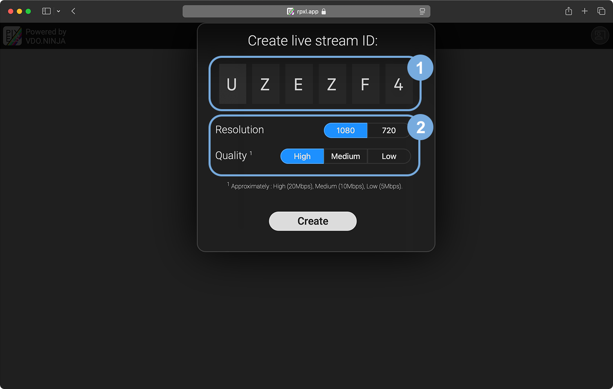
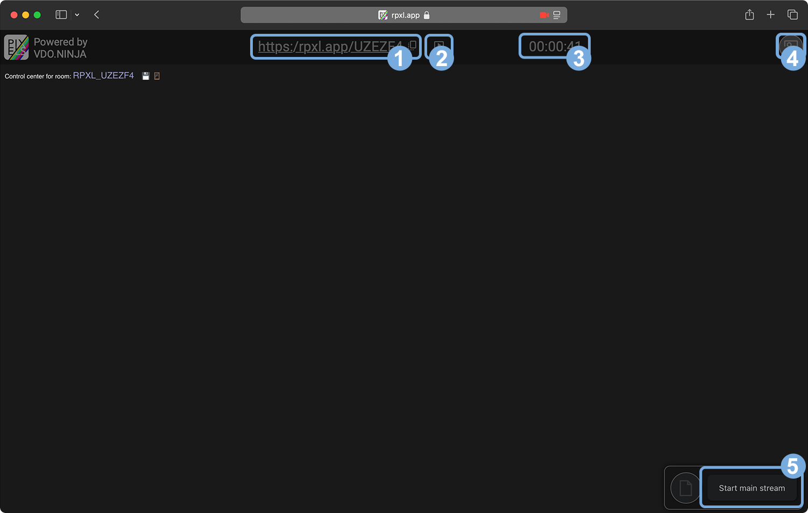
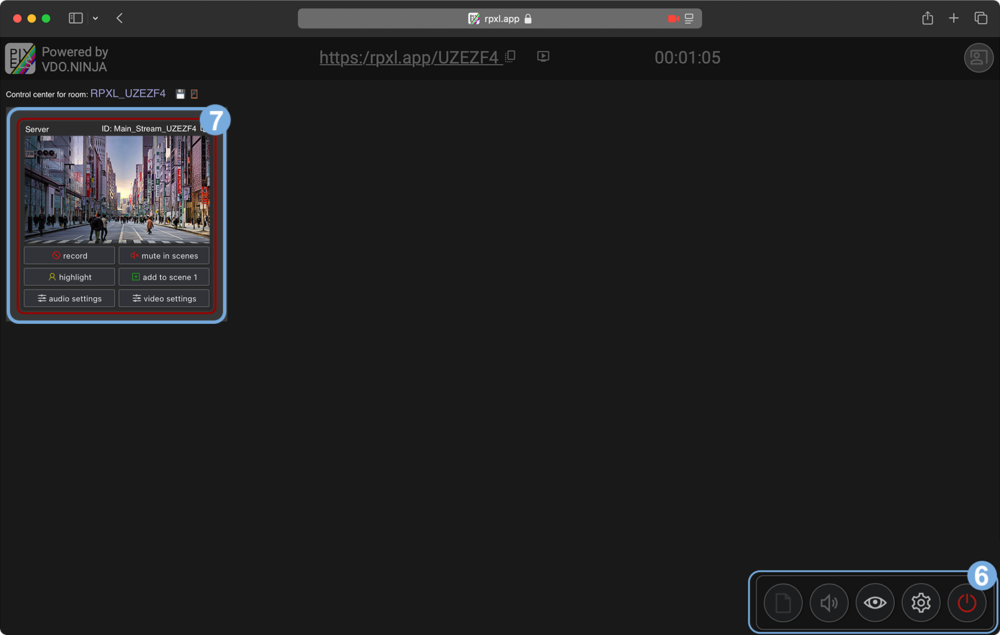
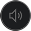
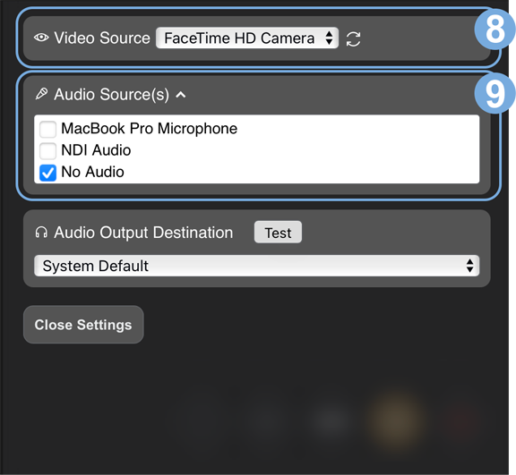
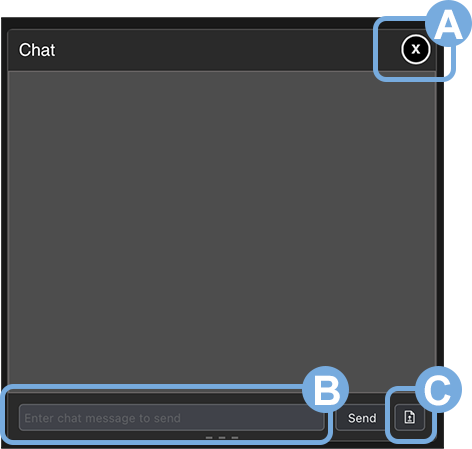
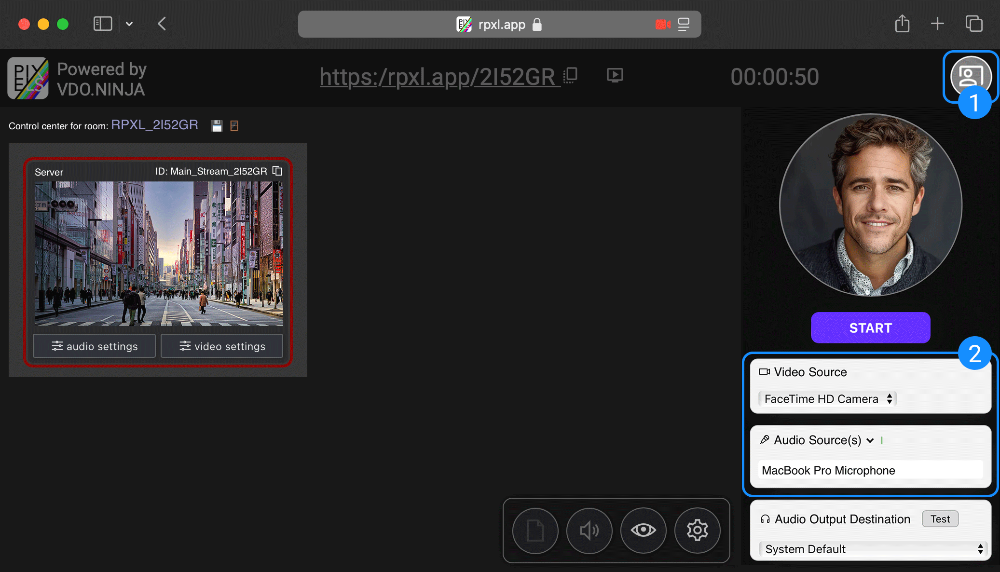
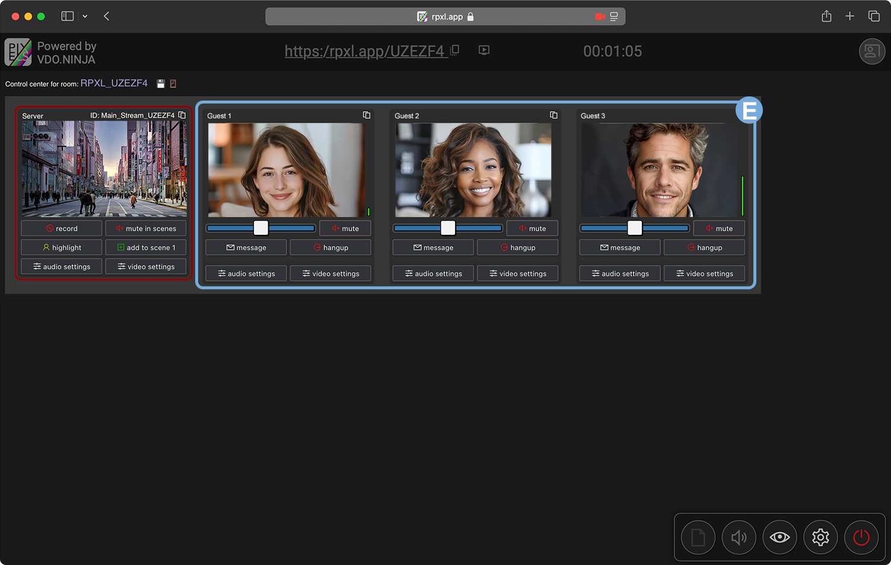
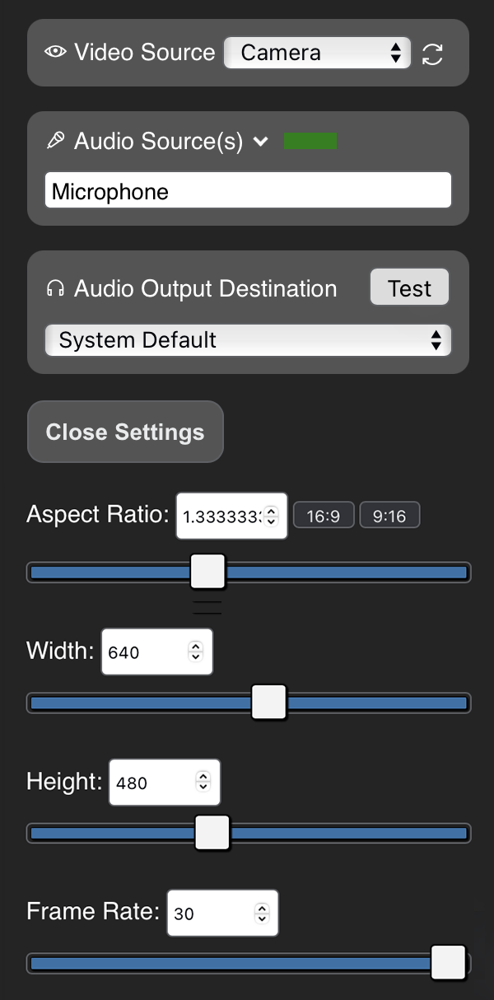
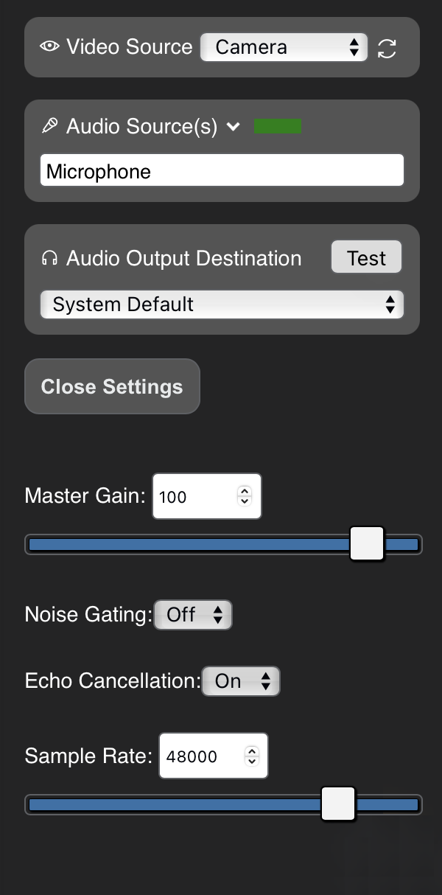

General Information
This application has been tested on Chrome, Firefox and Safari, we recommend Chrome as this appears to be the most stable.
The streaming page is only for desktop browsers, mobile browsers and iPads will not work. However streams can be viewed on most desktop and mobile devices.
This application can only create streams from sources available to your browser, such as a webcam, display capture device, or a virtual camera source such as NDI or OBS Virtual camera.
You must allow your browser to access your webcam and microphone to use this application, see your browser settings if you are not prompted after creating the room.
Creating a session

When you first access the stream page you have some basic options for creating the session.
1
Room ID
This is randomly generated every time you access this page, but you can enter your own value if you wish.
This allows you to re-use a previous ID if you wish to continue a previous session.
Numbers and uppercase letters are allowed (lowercase letters will automatically be changed to uppercase), no special characters.
Avoid using simple or easily guessable IDs to prevent unwanted guests joining (such as ABCDEF or 123456).
2
Stream Settings
Initial settings for the main stream.
These are the maximum settings that will be allowed, if users have a poor connection or your machine is overloaded the stream will adjust accordingly.
As all encoding is done on your host machine, be aware that more clients can lead to more processing on your side. If the stream starts to lose sync or frames are being dropped then try a lower setting.
These settings can be adjusted during the session.
Resolutions currently supported are 1080p and 720p, 4k is available in the advanced setting menu but is not recommended.
Quality is the bitrate of the stream, higher quality will provide smoother playback but require more bandwidth and processing power.
Settings are equivalent to High, 20Mbps, Medium, 10Mbps, Low, 5Mbps.
Clicking Create will setup the session and take you to the main screen where you can start the stream.
Starting the main stream

Once you have created your session you will then be presented with the main interface of the application.
Here you will be able to change stream settings, view and control clients and send chat messages or files.
The main interface.
1
Client link
This is the ID of the session you created earlier.
Clients who receive this link will be asked to join with their camera and microphone to view the stream and will be able to chat to other participants in the room.
Clicking on this link will copy it to the clipboard for easy sharing with clients.
2
Quick link
This is a quick link to the main stream only.
Use this link if you are already chatting with someone and want to quickly share the stream with them.
Clients who receive this link will only be able to view the main stream and will not be able to chat or see other participants.
Clicking on this link will copy it to the clipboard for easy sharing.
3
Session duration
Shows the time since the session was started.
4
Join as presenter
If you wish to be visible as a presenter in the room this will allow you to join using your webcam and microphone.
You can join as a voice only, see settings for selecting more than one audio input, but you will not be able to mute the main stream separately to your own microphone.
5
Start main stream
Now that you have created a room you are ready to start streaming, click this button to start the stream.
See
settings for details on how to configure the main stream.
Main Interface

Once you have created the main stream, the full toolbar will appear as well as the viewer (7).
1
Main toolbar
This is the main toolbar for the stream for the room.
It allows you to send files, mute, hide or change the main stream settings.
Chat Icon Allows you to send messages or files to all participants in the room.
See the chat section for more details.

Mute Icon Allows you to mute the main stream.
This will mute the main stream for all participants in the room.
Hide Icon Allows you to hide the main stream.
This essentially will blind the guests to the main stream.
Settings Icon Allows you to change the most common settings for main stream.
See the settings section for more details.
2
Viewer
Preview of the main stream, it is always highlighted in red.
The options are slightly different than those for guests.
Audio and video settings buttons, these will bring up advanced settings.
See
settings for details on how to configure the main stream.
Main stream settings

Clicking the gear icon on the main toolbar or clicking the audio and video settings buttons bellow the preview will bring up the settings pane for the main stream.
1
Video source
Selects the video source for the main stream.
Normally this would be a capture device, such as a HDMI to USB adapter, a virtual NDI Camera or a direct stream for your software if supported.
We recommend using NDI tools, as it's free and seems to offer the best colour fidelity. Some of the cheaper HDMI to USB capture devices can sometimes apply a second colour LUT over your footage, changing colour balance and saturation.
What you use is up to you but it must present itself to the browser as a webcam source, so a modern capture card such as those from Blackmagic or AJA will not work.
2
Audio Source(s)
Selects the audio source for the main stream.
You can select more than one source by SHIFT clicking on the sources.
This will allow you to add your microphone to an NDI source and the application will mix them together.
This is useful if you want to chat to clients but not be visible as a participant, however you will not be able to control the volume of the main stream and your microphone separately.
A better solution is to join as a presenter as discussed later.
The audio output source allows you to select a different output source if you wish, though the system default is used.
Chat and file uploads
As the creator of the stream you can also send chat messages or files to any clients in the room.
Clicking the file or chat icon will bring up the chat window.
Note that only you can send chat messages or files, participants can receive but not reply at the moment.
The chat window.

1
Close the chat window
Closes the chat window, you can also click and drag the top bar to reposition the window.
2
Text input area
Type messages here to send to all participants in the room. You can send links to sites for reviews or other information.
To send a message to an individual instead, use the message button under their preview. This will send a private message though they will still not be an able to reply.
Chats are not saved or recorded, once a session ends all messages are deleted and are not recoverable.
3
File upload button
This will open the file selector allowing you to choose files to upload to the room.
Note that a separate data stream will be created for each participant in the room as they download it, every time they download it.
This can lead to overwhelming bandwidth usage and be cause major local drive usage so use with care.
Links to files are ephemeral, when the stream is ended all links to files will be deleted and are not recoverable.
Presenting

To be visible to clients as a presenter you need to join the room as a guest.
If you have offloaded the stream to a separate machine you can simply use the client link and join that way.
However, if you are streaming locally you will want to join as a presenter.
1
Presenter window
The presenter window allows you to join the chat with your webcam and microphone separate from the main stream.
You could open another browser or tab and join that way but this is a simpler solution that allows you to remain in the main control room.
2
Presenter options
Allow you to select a separate video and audio source on your machine to present from.
Be careful not to select the same source as the main stream as this will cause a conflict and often stop the stream as the browser tries to connect twice to a device.
Also do not add your microphone to the main stream and as a presenter as this will cause feedback and echo issues
Once you have chosen your settings a preview will appear and a small audio meter will be active, you can then click start and you will be added to the room.
Clicking the presenter icon will close the window but the webcam and microphone will remain active. You can then mute yourself or hide yourself using the controls in the main room.
Guests

Guests will appear in the main interface besides the main stream. Guests are not highlighted in red.
1
Guest previews
A preview of the guest will appear if they have turned on their webcam.
A green audio meter will appear next to each guest representing the volume of their microphone.
You can lower or raise guests microphone volume by using the slider below their preview, this is handy for guests who are to soft or to hot in the chat.
You can mute individual guests by clicking the mute button
You can send messages to an individual guest by clicking the message button.
Note that they cannot respond at this time.
The hangup button will disconnect the guest from the room, but they will be able to rejoin using the same link.
The audio settings button allows you to select an alternate microphone or input source for guests to help them connect, they will be prompted that you have requested a change of audio source.
Similarly the video settings button allows you to select an alternate video source for guests to help them connect, they will be prompted that you have requested a change of audio source.
Should a guest join without a camera they will appear as a blank preview, you can still chat with them and they can still see the main stream.
Advanced options
When clicking the audio or video button under the main stream advanced options are available.

Advanced Video Options
Advanced options available are Aspect ratio. Presets include 16x9, a common format for video and 9x16, a common format for mobile video.
Width and height in pixels of the stream.
Frame rate, this will adjust the frames per second of the main stream.
We recommend using 16:9 aspect ratio, 1920x1080 or 1280x720 resolution and 30 or 25 frames per second for compatibility, but other formats are supported.

Advanced Audio Options
A master gain control to adjust the volume of the main stream.
Noise gating, this will remove any audio below a certain threshold, useful for removing background noise.
Echo cancellation, this will remove any audio that is picked up by the microphone that is also being played through the speakers, useful for preventing feedback.
Sample rate, this will adjust the sample rate of the main stream, useful for when the audio is out of sync with the video.
Most of these settings are set to their default values and should not need to be adjusted, but if you are having issues with the stream then feel free to adjust them as needed.
Misc
Not having a central server introduces some benefits and some gotcha's that bear thinking about when using the application.
As all Guests are connecting directly to your machine and not a central server we recommend using wired ethernet. Wifi has inherit latency issues which will disrupt stream.
If you are having issues with sync or dropped frames try this first.
Your host PC must be able to encode and transmit the video in real time while you are working (although this can be offloaded to another machine), a modern CPU & GPU is essential.
This app has been tested on modern Macs and although RAM is not an issue the more cores, the better.
Every extra guest that connects will increase the load on the hosts workstation, with a modern system and GPU, rooms of about a dozen people should be doable.
Guests connect at a very low resolution and very little bandwidth, typically under 80kbps per user, the majority of your bandwidth is prioritised to the main stream.
Guests are also connected directly peer to peer to one another so you do not need to process their audio or video locally to retransmit.
On the top right of the main window an information bar displays the amount of streams, viewers and audio connections and the current bandwidth being used.
Additionally a warning may appear if your CPU is being overused, normally over 80% usage, if you see this then we recommend lowering the resolution in the stream settings.
Keep in mind that any files you share will no longer be available once you as host, disconnect from the session, if you wish to share files for later review then a third party service will be required.